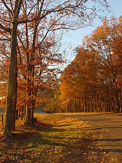

Fall away!
Falling out with style
Autumn baby
Fall, also know as Autumn is another one of Earth's seasons that is a transition season from Summer to Fall. Fall typically occurs from early to mid September and lasts to end of October or November. During Fall, day time starts to become shorter and the temperature slowly begins to drop in preperation for Winter. A core point in Fall is that many trees have their leaves change color into a orange-red color and shed these leaves off during the Fall months.
 
Fall in human folklore has always been associated with the idea of harvesting. Harvest time typically falls during the Fall months and it's during this time where many resources such as food become abundant and ripe for the taking. Fall is also associated with melonchaly since the opportunity of summer is gone and winter is approching, many portrayals list Fall with dark, depressive skies signalling the depressive grasp. Some holidays that appear during the Fall months are Halloween, Thanksgiving, the start of back to school, as well as the start of the American Football season.